作者：周熠 30页 2026.11.13
本版在封面和目录之后，用第3–12页建立Agent方法、9个领域代表工作和本项目研究定位。六种方法分别关联反馈、计划、记忆、搜索、离线优化和角色协作，再进入分层Agent主架构、内部决策闭环及部署架构。两页任务地图描述持续扩展的能力范围，两个科研场景仅为示例。新增任务通过科学规格、工具适配、领域验证和参考测试接入。
面向跨任务结构生物学计算的Agent研究与实现方案
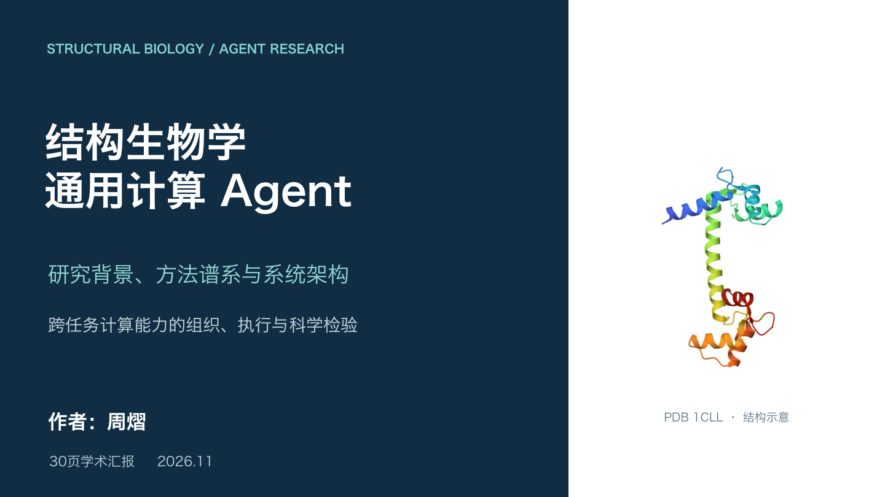
作者：周熠
先建立方法与领域脉络，再解释本项目的架构、实现与评价
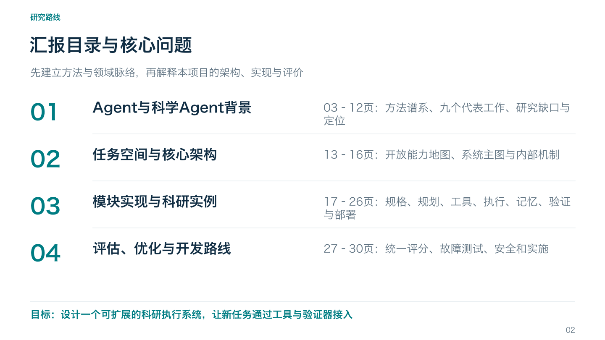
| 01 | Agent与科学Agent背景 | 03–12页：方法谱系、九个代表工作、研究缺口与定位 |
| 02 | 任务空间与核心架构 | 13–16页：开放能力地图、系统主图与内部机制 |
| 03 | 模块实现与科研实例 | 17–26页：规格、规划、工具、执行、记忆、验证与部署 |
| 04 | 评估、优化与开发路线 | 27–30页：统一评分、故障测试、安全和实施 |
目标：设计一个可扩展的科研执行系统，让新任务通过工具与验证器接入
研究输入跨越序列、实验数据和模型，科学结论依赖多步骤证据
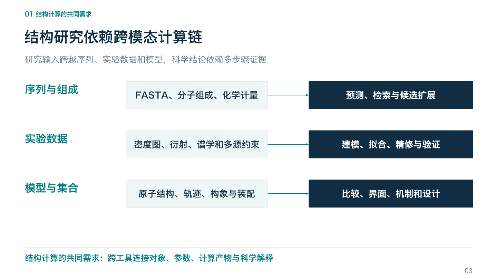
| 序列与组成 | FASTA、分子组成、化学计量 | 预测、检索与候选扩展 |
| 实验数据 | 密度图、衍射、谱学和多源约束 | 建模、拟合、精修与验证 |
| 模型与集合 | 原子结构、轨迹、构象与装配 | 比较、界面、机制和设计 |
结构计算的共同需求：跨工具连接对象、参数、计算产物与科学解释
结构预测、实验约束建模、搜索和机制分析提供不同层次的能力。预测模型并不自动解决实验数据支持、对象身份和机制因果。这里概括领域输入及任务角色，不作跨方法性能比较。
模型形成候选决策，工具返回观察，运行时规定可以采取哪些行动
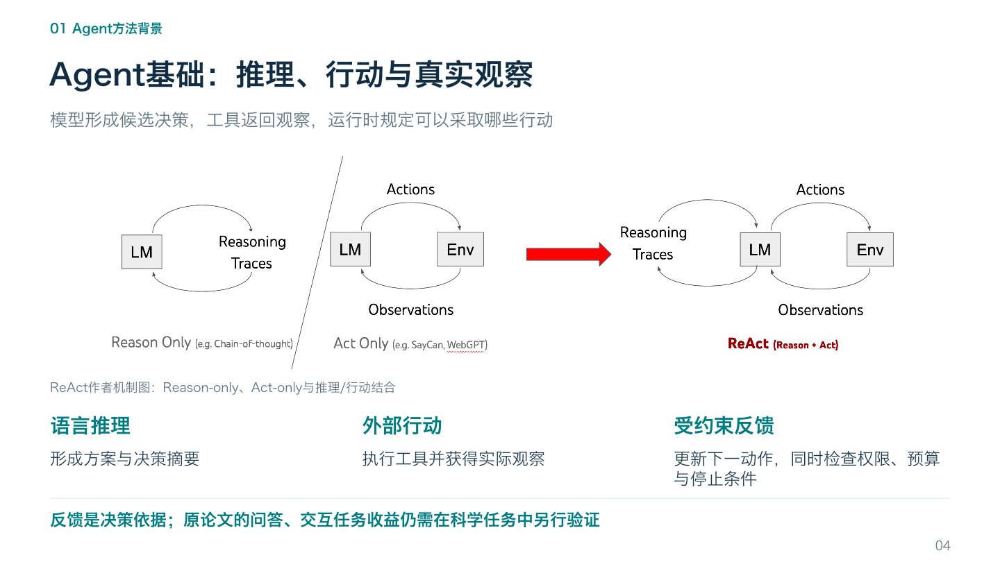
| 语言推理 | 形成方案与决策摘要 |
| 外部行动 | 执行工具并获得实际观察 |
| 受约束反馈 | 更新下一动作，同时检查权限、预算与停止条件 |
反馈是决策依据；原论文的问答、交互任务收益仍需在科学任务中另行验证
图为ReAct作者原机制示意，展示reason-only、act-only与推理/行动结合的区别。它是方法背景，不是本项目结构生物学实测结果。审计记录保存动作、观察与决策摘要，不要求披露模型内部思维链。
按系统作用比较方法，避免把论文名排成统一的优劣顺序
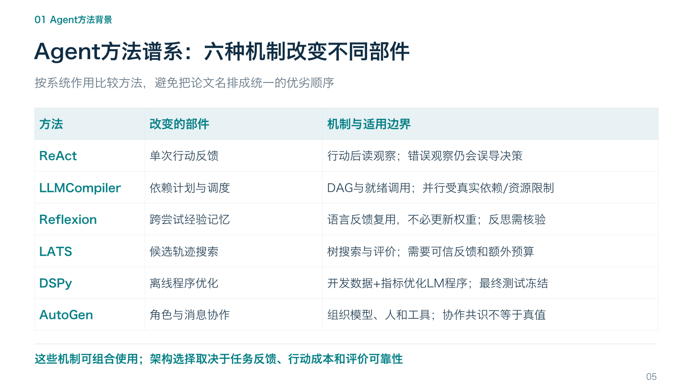
| 方法 | 改变的部件 | 机制与适用边界 |
| ReAct | 单次行动反馈 | 行动后读观察；错误观察仍会误导决策 |
| LLMCompiler | 依赖计划与调度 | DAG与就绪调用；并行受真实依赖/资源限制 |
| Reflexion | 跨尝试经验记忆 | 语言反馈复用，不必更新权重；反思需核验 |
| LATS | 候选轨迹搜索 | 树搜索与评价；需要可信反馈和额外预算 |
| DSPy | 离线程序优化 | 开发数据+指标优化LM程序；最终测试冻结 |
| AutoGen | 角色与消息协作 | 组织模型、人和工具；协作共识不等于真值 |
这些机制可组合使用；架构选择取决于任务反馈、行动成本和评价可靠性
原论文验证涵盖问答、代码、网页与交互环境等，不直接构成本项目结构生物学效果证据。DSPy属于离线优化方法，不能画作每步工具执行的在线反馈模块；Reflexion使用语言经验，不必更新模型权重。AutoGen原论文机制与当前SDK版本应分开。
确定的计算步骤可固化，动态选择与协作机制需要额外的收益证据
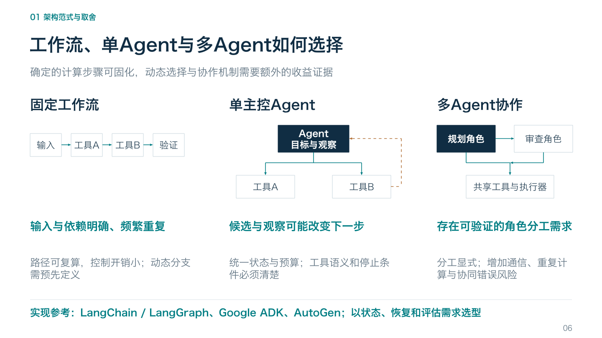
| 固定工作流 | 输入与依赖明确、频繁重复 | 路径可复算，控制开销小；动态分支需预先定义 |
| 单主控Agent | 候选与观察可能改变下一步 | 统一状态与预算；工具语义和停止条件必须清楚 |
| 多Agent协作 | 存在可验证的角色分工需求 | 分工显式；增加通信、重复计算与协同错误风险 |
实现参考：LangChain / LangGraph、Google ADK、AutoGen；以状态、恢复和评估需求选型
三个小图是本汇报对架构模式的概念说明，不是定量的性能排序。多Agent只有在分工、工具与评分可明确控制时才便于检验贡献。比较时同时报告成功、成本、延迟、错误及人工介入。 工程框架与架构范式不一一对应。LangChain提供模型、工具与中间件组织，LangGraph支持状态化的确定流程和Agent编排，Google ADK提供Agent及工作流组件。框架功能不自动保证科学正确性。本项目建议用LangGraph持久状态图承载主控，科学工具由独立Worker执行，再用同预算实验检验协作机制。
九个代表工作覆盖不同科研环节，框架、研究系统与软件入口分别辨识
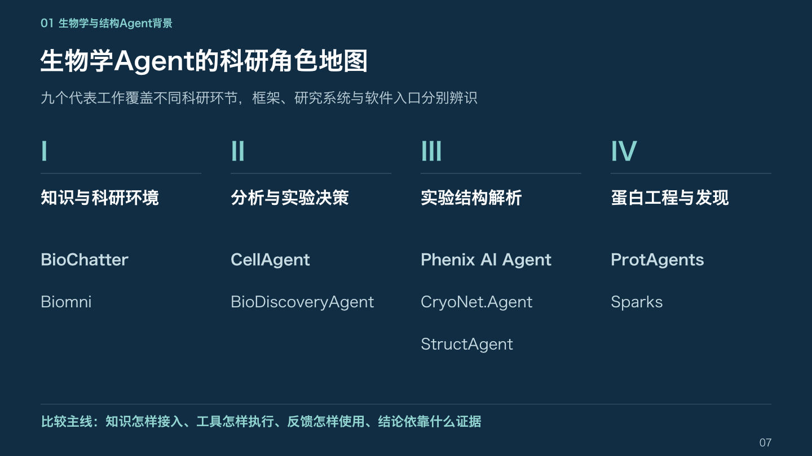
| 知识与科研环境 | BioChatter | Biomni | |
| 分析与实验决策 | CellAgent | BioDiscoveryAgent | |
| 实验结构解析 | Phenix AI Agent | CryoNet.Agent | StructAgent |
| 蛋白工程与发现 | ProtAgents | Sparks |
比较主线：知识怎样接入、工具怎样执行、反馈怎样使用、结论依靠什么证据
这是按科研角色组织的代表性地图，分类可交叉，未声称穷尽领域或构成统一自主性/性能排名。BioChatter是应用框架，Biomni及CellAgent等为研究系统；Phenix和CryoNet介绍采用官方实现/功能文档，不能视为相同协议下的性能证据。
四种路线改变科研链条的不同环节，反馈的来源与含义也不同
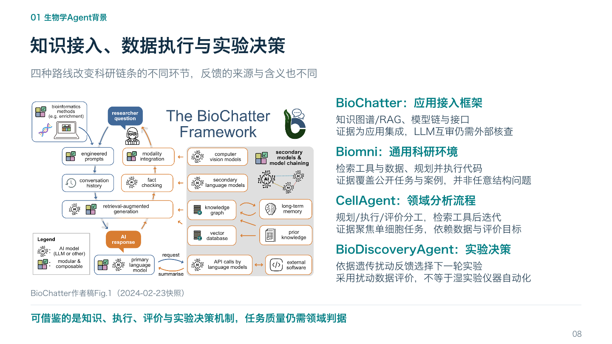
| BioChatter：应用接入框架 | 知识图谱/RAG、模型链与接口 证据为应用集成，LLM互审仍需外部核查 |
| Biomni：通用科研环境 | 检索工具与数据、规划并执行代码 证据覆盖公开任务与案例，并非任意结构问题 |
| CellAgent：领域分析流程 | 规划/执行/评价分工，检索工具后迭代 证据聚焦单细胞任务，依赖数据与评价目标 |
| BioDiscoveryAgent：实验决策 | 依据遗传扰动反馈选择下一轮实验 采用扰动数据评价，不等于湿实验仪器自动化 |
可借鉴的是知识、执行、评价与实验决策机制，任务质量仍需领域判据
左图为BioChatter作者稿Fig.1，2024-02-23快照，保留图的原义与出处。其他三个项目不共享这一架构。CellAgent根据2024原始预印本机制介绍，未混用后续版本性能数字。BioDiscoveryAgent用于说明闭环实验选择，不提供湿实验操作程序。
建模、拟合与精修由专业引擎完成，Agent组织步骤、约束与审阅
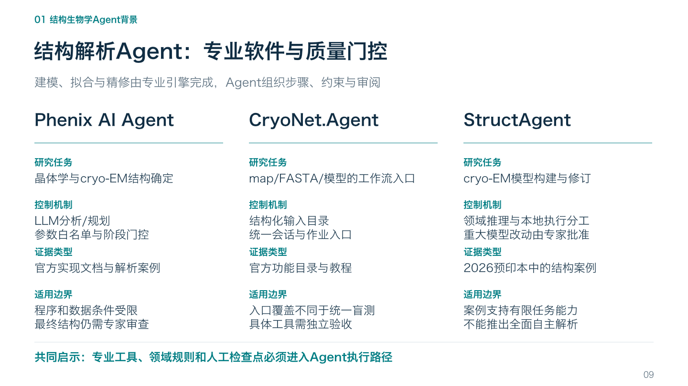
| Phenix AI Agent | 晶体学与cryo-EM结构确定 | LLM分析/规划 参数白名单与阶段门控 | 官方实现文档与解析案例 | 程序和数据条件受限 最终结构仍需专家审查 |
| CryoNet.Agent | map/FASTA/模型的工作流入口 | 结构化输入目录 统一会话与作业入口 | 官方功能目录与教程 | 入口覆盖不同于统一盲测 具体工具需独立验收 |
| StructAgent | cryo-EM模型构建与修订 | 领域推理与本地执行分工 重大模型改动由专家批准 | 2026预印本中的结构案例 | 案例支持有限任务能力 不能推出全面自主解析 |
共同启示：专业工具、领域规则和人工检查点必须进入Agent执行路径
Phenix文档列出PERCEIVE/THINK/PLAN/BUILD/VALIDATE/OUTPUT，LLM主要参与THINK和PLAN。CryoNet使用同日核验的官方HTML快照，在线页面抓取超时。这里的StructAgent为Xiaohu Guo的cryo-EM系统，不是arXiv:2607.11388的同名数字Agent论文。不同来源的案例与产品文档不能直接用于成功率比较。
生成、预测、模拟与实验检验属于不同层次的证据
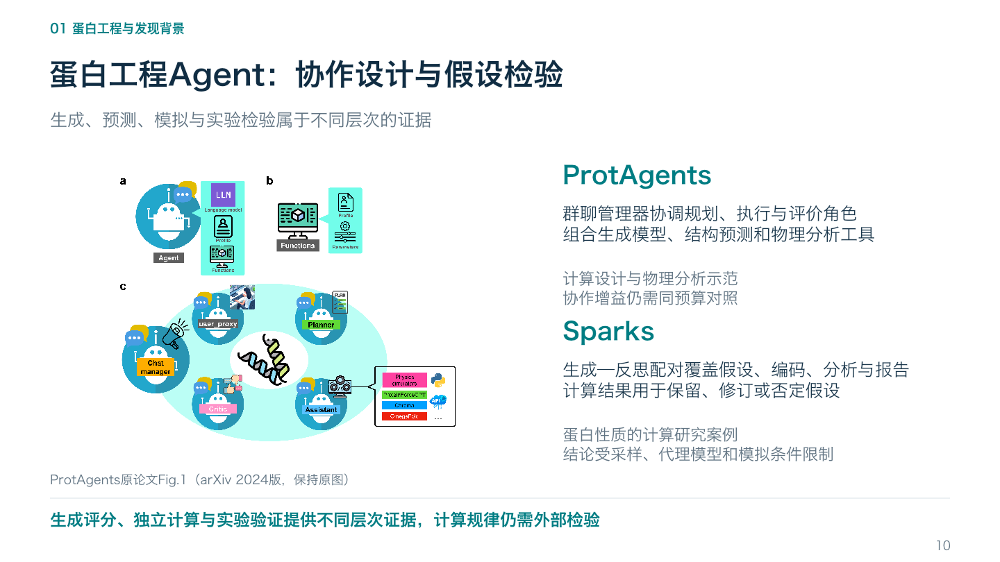
| ProtAgents | 群聊管理器协调规划、执行与评价角色 组合生成模型、结构预测和物理分析工具 | 计算设计与物理分析示范 协作增益仍需同预算对照 |
| Sparks | 生成—反思配对覆盖假设、编码、分析与报告 计算结果用于保留、修订或否定假设 | 蛋白性质的计算研究案例 结论受采样、代理模型和模拟条件限制 |
生成评分、独立计算与实验验证提供不同层次证据，计算规律仍需外部检验
左图为ProtAgents原论文Fig.1，保持完整含义，并非本项目原创架构。ProtAgents采用计算示范而非领域通用基准。Sparks案例组合生成、预测、二级结构、性质模型与MD等，不把代理评分或模拟观察等同实验确认，不声称这些系统完成所有证据层级。
现有工作已经实现多种科研闭环，本项目需要检验更广任务组合下的可靠性
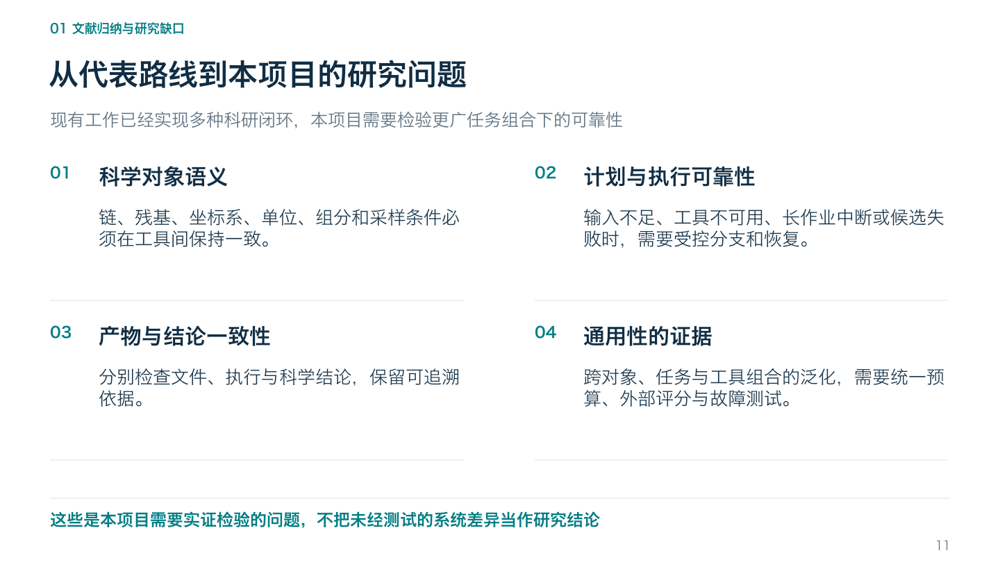
| 科学对象语义 | 链、残基、坐标系、单位、组分和采样条件必须在工具间保持一致。 |
| 计划与执行可靠性 | 输入不足、工具不可用、长作业中断或候选失败时，需要受控分支和恢复。 |
| 产物与结论一致性 | 分别检查文件、执行与科学结论，保留可追溯依据。 |
| 通用性的证据 | 跨对象、任务与工具组合的泛化，需要统一预算、外部评分与故障测试。 |
这些是本项目需要实证检验的问题，不把未经测试的系统差异当作研究结论
研究对象是可扩展的结构生物学Agent，核心是任务组织与可信执行
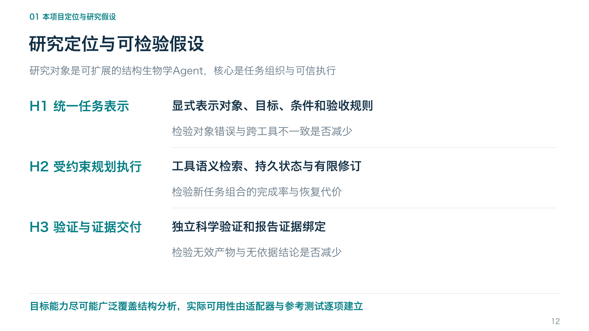
| H1 统一任务表示 | 显式表示对象、目标、条件和验收规则 | 检验对象错误与跨工具不一致是否减少 |
| H2 受约束规划执行 | 工具语义检索、持久状态与有限修订 | 检验新任务组合的完成率与恢复代价 |
| H3 验证与证据交付 | 独立科学验证和报告证据绑定 | 检验无效产物与无依据结论是否减少 |
目标能力尽可能广泛覆盖结构分析，实际可用性由适配器与参考测试逐项建立
假设与收益是待检验内容。首版采用单主控框架，工具和验证规则可扩展。多Agent、模型升级和更多计算预算都不能自动当作有效性提升。
任务与模态共同组织能力，面向蛋白、核酸、配体、糖链和复合物
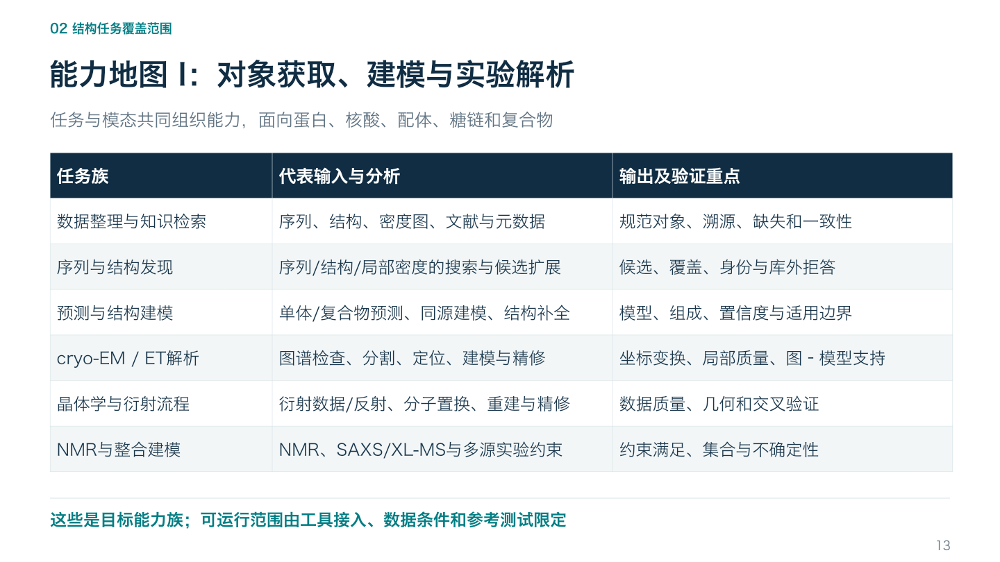
| 任务族 | 代表输入与分析 | 输出及验证重点 |
| 数据整理与知识检索 | 序列、结构、密度图、文献与元数据 | 规范对象、溯源、缺失和一致性 |
| 序列与结构发现 | 序列/结构/局部密度的搜索与候选扩展 | 候选、覆盖、身份与库外拒答 |
| 预测与结构建模 | 单体/复合物预测、同源建模、结构补全 | 模型、组成、置信度与适用边界 |
| cryo-EM / ET解析 | 图谱检查、分割、定位、建模与精修 | 坐标变换、局部质量、图–模型支持 |
| 晶体学与衍射流程 | 衍射数据/反射、分子置换、重建与精修 | 数据质量、几何和交叉验证 |
| NMR与整合建模 | NMR、SAXS/XL-MS与多源实验约束 | 约束满足、集合与不确定性 |
这些是目标能力族；可运行范围由工具接入、数据条件和参考测试限定
分析模块可独立使用，也可由Agent组合成新的研究流程
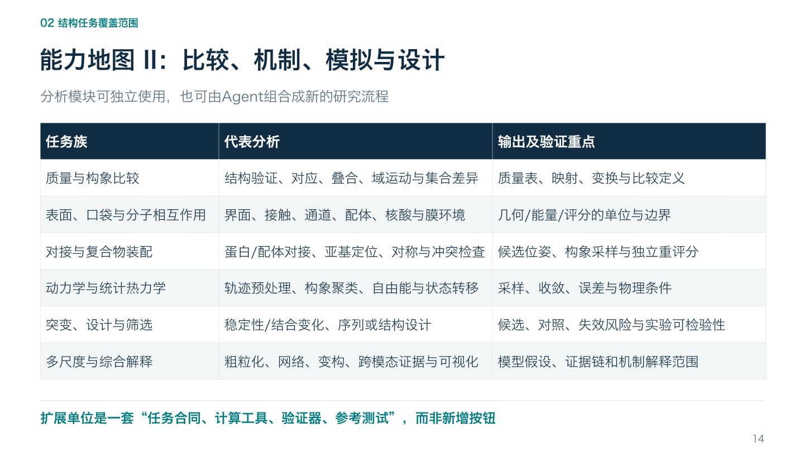
| 任务族 | 代表分析 | 输出及验证重点 |
| 质量与构象比较 | 结构验证、对应、叠合、域运动与集合差异 | 质量表、映射、变换与比较定义 |
| 表面、口袋与分子相互作用 | 界面、接触、通道、配体、核酸与膜环境 | 几何/能量/评分的单位与边界 |
| 对接与复合物装配 | 蛋白/配体对接、亚基定位、对称与冲突检查 | 候选位姿、构象采样与独立重评分 |
| 动力学与统计热力学 | 轨迹预处理、构象聚类、自由能与状态转移 | 采样、收敛、误差与物理条件 |
| 突变、设计与筛选 | 稳定性/结合变化、序列或结构设计 | 候选、对照、失效风险与实验可检验性 |
| 多尺度与综合解释 | 粗粒化、网络、变构、跨模态证据与可视化 | 模型假设、证据链和机制解释范围 |
扩展单位是一套“任务合同、计算工具、验证器、参考测试”，而非新增按钮
LLM认知层、确定性运行时、科学工具与证据底座分层协作
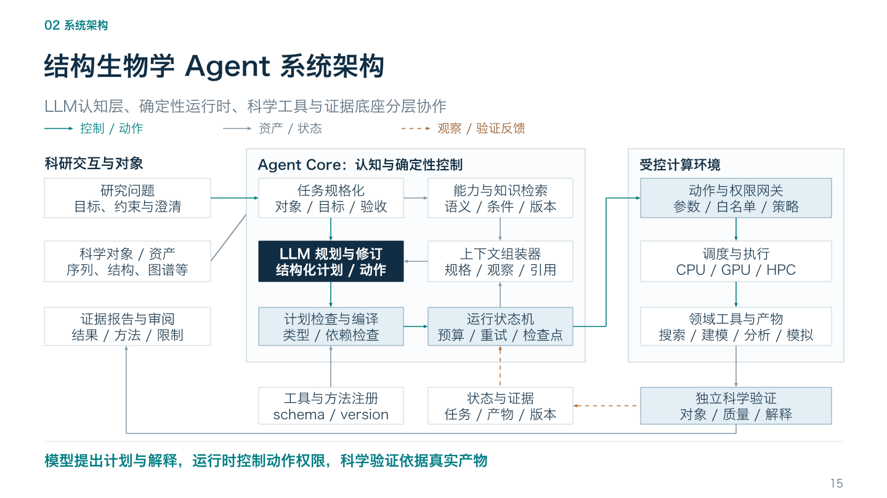
| 认知与规划 | 任务规格化、能力与知识检索、上下文组装、LLM规划与修订 |
| 确定性控制 | 计划编译、类型检查、运行状态机、预算与恢复 |
| 受控计算 | 动作权限网关、作业调度、领域工具与真实产物 |
| 证据与验证 | 工具合同、状态与产物引用、独立科学质量与报告依据 |
| 科研交付 | 验证后的结果、方法、限制和人工审阅 |
模型提出计划与解释，运行时控制动作权限，科学验证依据真实产物
主图是拟建系统架构而非顺序流程图。科研任务与数据经任务规范模块进入Agent Core；上下文组装器结合工具检索与运行观察，给LLM规划器提供受控上下文；规划动作必须经过确定性运行时、动作网关及作业管理器。独立验证器检查实际产物并把结构化观察写入证据与状态，反馈给下一步决策。工具文档、状态/检查点与不可变产物逻辑分开存储，图中以共享底座概括。图例区分控制/动作、资产/状态、观察/验证反馈。
显式状态 sₜ 支持动作选择 aₜ、受控执行和下一轮状态更新
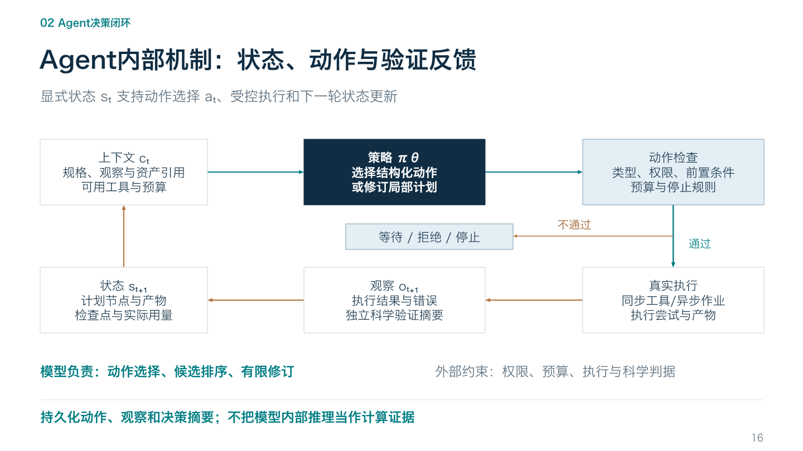
| 上下文 cₜ | 规格、观察与资产引用 可用工具与预算 |
| 策略 πθ | 选择结构化动作 或修订局部计划 |
| 动作检查 | 类型、权限、前置条件 预算与停止规则 |
| 真实执行 | 同步工具/异步作业 执行尝试与产物 |
| 观察 oₜ₊₁ | 执行结果与错误 独立科学验证摘要 |
| 状态 sₜ₊₁ | 计划节点与产物 检查点与实际用量 |
持久化动作、观察和决策摘要；不把模型内部推理当作计算证据
计划是候选执行方案而非科学事实。策略可以依据观察修订局部计划，但任务意图改变应创建新科学规格。运行时检查和科学验证属于外部约束，模型不能通过改写解释把失败变成成功。超过预算或不可恢复错误需要终止。
例：“比较两个复合物的界面差异，指出哪些接触发生改变”
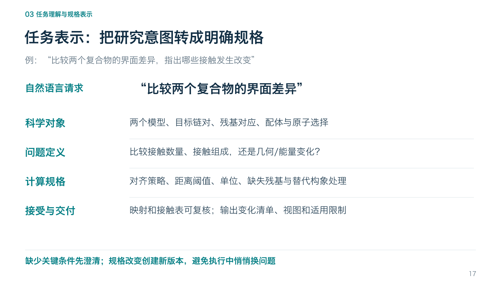
| 科学对象 | 两个模型、目标链对、残基对应、配体与原子选择 |
| 问题定义 | 比较接触数量、接触组成，还是几何/能量变化？ |
| 计算规格 | 对齐策略、距离阈值、单位、缺失残基与替代构象处理 |
| 接受与交付 | 映射和接触表可复核；输出变化清单、视图和适用限制 |
缺少关键条件先澄清；规格改变创建新版本，避免执行中悄悄换问题
本例用于说明任务理解与规格表示模块如何产生可计算的任务，不是现有API可直接提交的JSON。对其他任务替换领域字段即可：密度图增加voxel/origin/axis，轨迹增加拓扑/周期边界/时间单位，衍射任务增加反射数据和工作/交叉验证集。
模型先检索适用能力，再组合满足输入输出条件的步骤
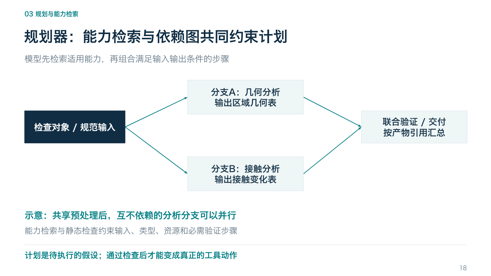
| 能力检索 | 按任务语义、输入类型、前置条件、版本和资源筛选工具 |
| 计划编译 | 把子任务编成依赖图，明确每条边传递哪个产物 |
| 静态检查 | 检查输入是否齐备、类型兼容、资源可用与验证步骤是否存在 |
| 执行后修订 | 根据新观察调整候选或局部步骤，限定修订次数与总预算 |
计划是待执行的假设；通过检查后才能变成真正的工具动作
工具合同同时描述语义、运行条件和可验证产物
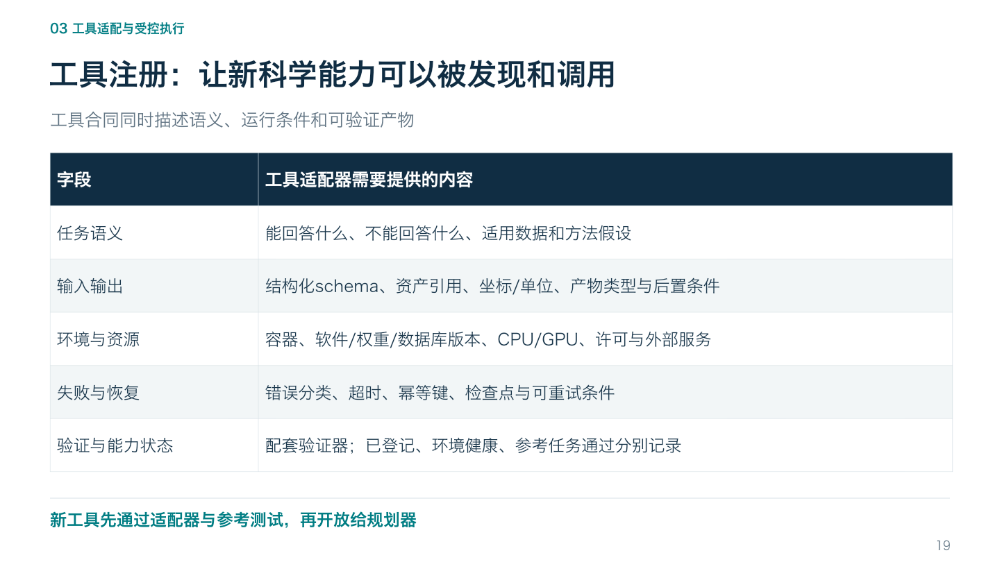
| 字段 | 工具适配器需要提供的内容 |
| 任务语义 | 能回答什么、不能回答什么、适用数据和方法假设 |
| 输入输出 | 结构化schema、资产引用、坐标/单位、产物类型与后置条件 |
| 环境与资源 | 容器、软件/权重/数据库版本、CPU/GPU、许可与外部服务 |
| 失败与恢复 | 错误分类、超时、幂等键、检查点与可重试条件 |
| 验证与能力状态 | 配套验证器；已登记、环境健康、参考任务通过分别记录 |
新工具先通过适配器与参考测试，再开放给规划器
模型读取可确认事实，外部状态机限制动作与停止条件
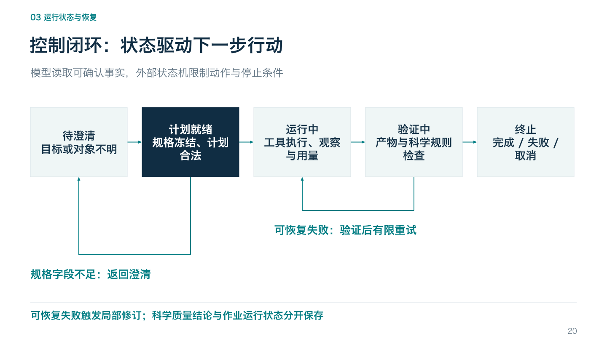
| 待澄清 | 目标或对象不明 |
| 计划就绪 | 规格冻结、计划合法 |
| 运行中 | 工具执行、观察与用量 |
| 验证中 | 产物与科学规则检查 |
| 终止 | 完成 / 失败 / 取消 |
可恢复失败触发局部修订；科学质量结论与作业运行状态分开保存
保留动作请求、工具观察和决策摘要，无需把模型内部推理当成计算证据。状态机处理等待、恢复和停止，验证失败不能被语言解释改成成功。预算计入所有尝试。
同步小工具、异步CPU/GPU作业、远端计算采用统一作业接口
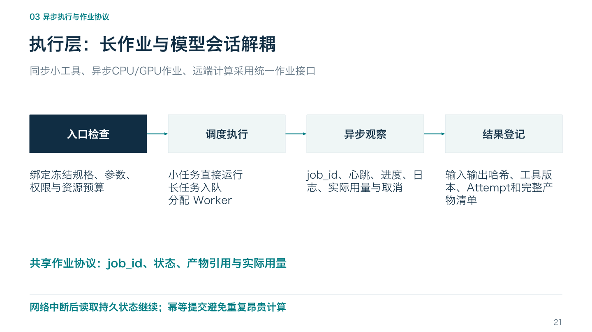
| 入口检查 | 绑定冻结规格、参数、权限与资源预算 |
| 调度执行 | 小任务直接运行 长任务入队 分配 Worker |
| 异步观察 | job_id、心跳、进度、日志、实际用量与取消 |
| 结果登记 | 输入输出哈希、工具版本、Attempt和完整产物清单 |
网络中断后读取持久状态继续；幂等提交避免重复昂贵计算
给模型足够的信息做决策，把原始科学数据留在受控存储中
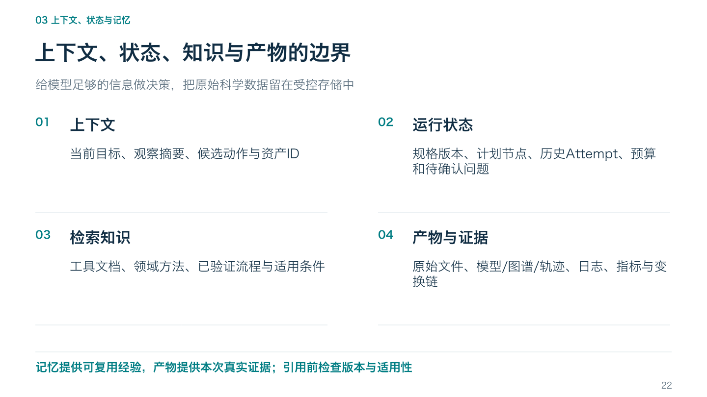
| 上下文 | 当前目标、观察摘要、候选动作与资产ID |
| 运行状态 | 规格版本、计划节点、历史Attempt、预算和待确认问题 |
| 检索知识 | 工具文档、领域方法、已验证流程与适用条件 |
| 产物与证据 | 原始文件、模型/图谱/轨迹、日志、指标与变换链 |
记忆提供可复用经验，产物提供本次真实证据；引用前检查版本与适用性
同一Agent框架使用不同领域验证器，判据随任务定义
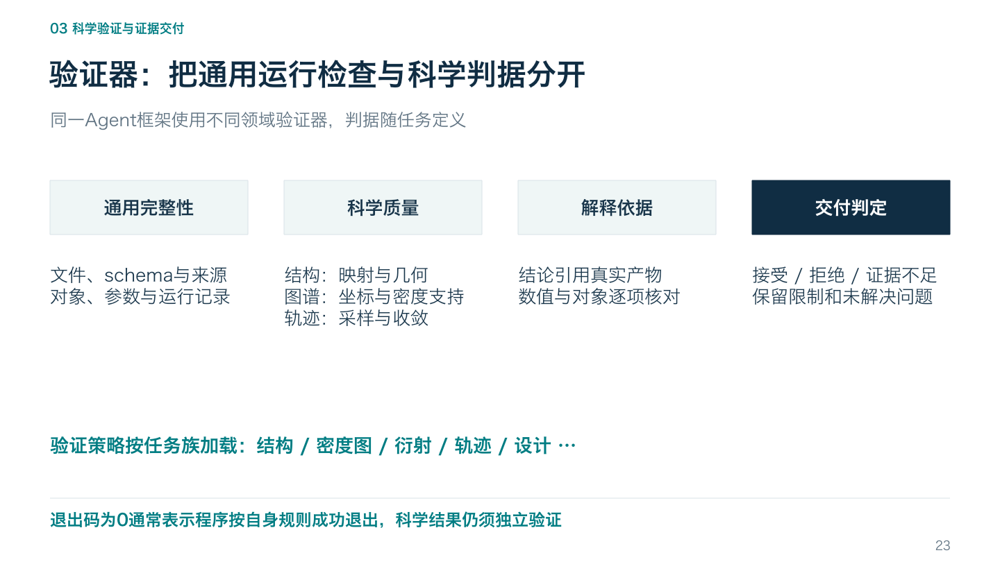
| 通用检查 | 文件、schema与来源 对象、参数与运行记录 |
| 领域验证 | 结构：映射与几何 图谱：坐标与密度支持 轨迹：采样与收敛 |
| 解释检查 | 结论引用真实产物 数值与对象逐项核对 |
| 交付状态 | 接受 / 拒绝 / 证据不足 保留限制和未解决问题 |
退出码为0通常表示程序按自身规则成功退出，科学结果仍须独立验证
用户只提供密度区域，系统根据输入条件选择计算分支
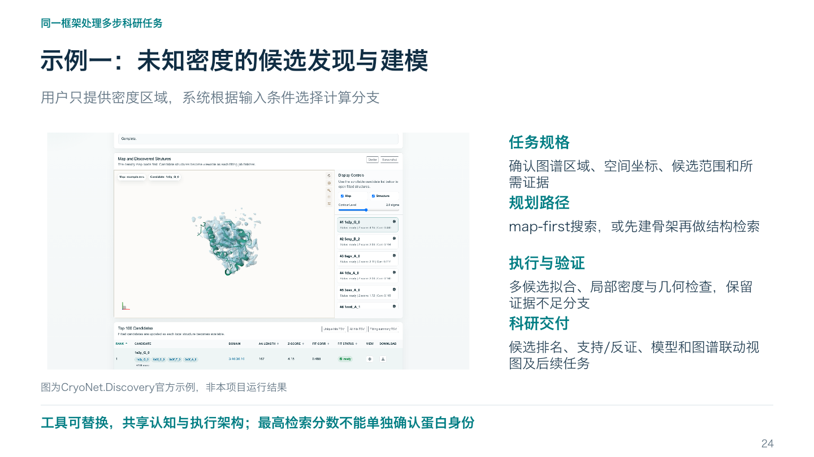
| 任务规格 | 确认图谱区域、空间坐标、候选范围和所需证据 |
| 规划路径 | map-first搜索，或先建骨架再做结构检索 |
| 执行与验证 | 多候选拟合、局部密度与几何检查，保留证据不足分支 |
| 科研交付 | 候选排名、支持/反证、模型和图谱联动视图及后续任务 |
工具可替换，共享认知与执行架构；最高检索分数不能单独确认蛋白身份
用户问：“这段模拟中，域运动与界面接触怎样共同变化？”
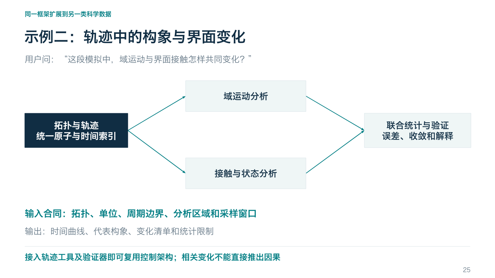
| 任务规格 | 拓扑/轨迹、时间单位、周期边界、链与区域、分析定义 |
| 规划路径 | 去周期与对齐；域几何、接触和聚类可按依赖并行 |
| 执行与验证 | 原子对应、采样区间、相关性、收敛与误差估计 |
| 科研交付 | 随时间曲线、状态代表构象、统计结果和物理解释限制 |
接入轨迹工具及验证器即可复用控制架构；相关变化不能直接推出因果
本页为拟建任务场景，未声明已经运行MD分析。并行分支应使用同一预处理版本与时间索引。采样不足时标记证据有限，不能用轨迹帧数冒充独立样本数。
把认知服务、作业执行和科学数据隔离部署，通过持久状态协调
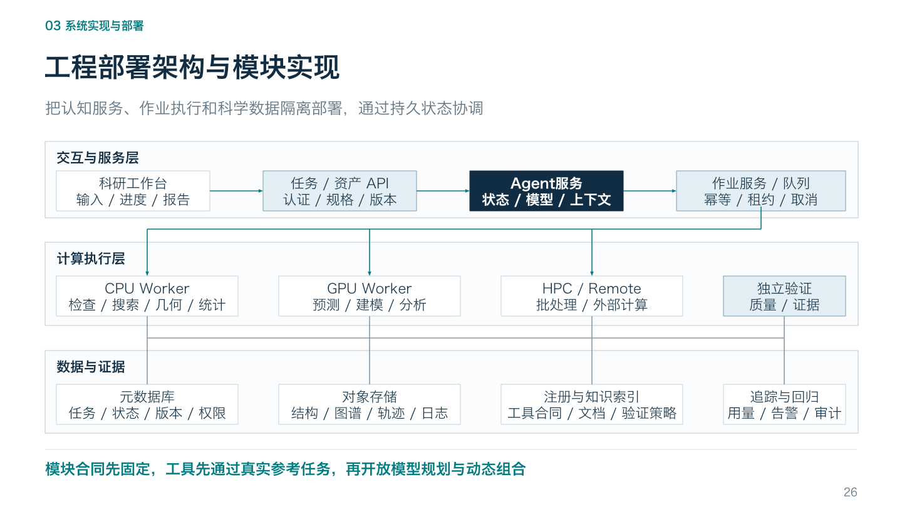
| 交互与API | Web工作台、FastAPI/Pydantic等任务与资产模型 |
| Agent服务 | LangGraph等状态图、模型适配与知识检索 |
| 作业服务 | 队列、租约、幂等提交、取消和事件回传 |
| 计算与证据 | CPU/GPU/HPC Worker、对象存储、元数据库与独立验证 |
模块合同先固定，工具先通过真实参考任务，再开放模型规划与动态组合
部署图为建议实现。Web/API和Agent服务不直接执行任意科学命令，作业服务调用隔离Worker。关系数据库保存任务、状态、版本与权限；对象存储保存结构、图谱、轨迹和日志；工具/知识注册与独立验证模块独立版本化。首版不要求同时实现全部GPU/HPC后端。
固定工具和数据能力，比较控制机制是否提高任务完成质量
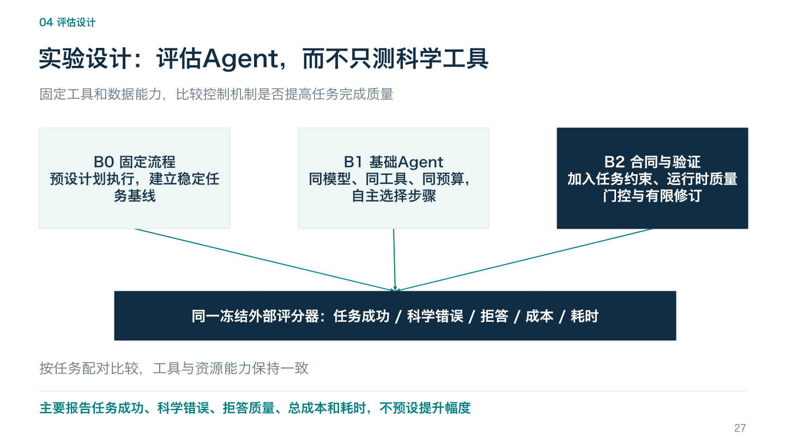
| B0 固定流程 | 预设计划执行，建立稳定任务基线 |
| B1 基础Agent | 同模型、同工具、同预算，自主选择步骤 |
| B2 合同与验证 | 加入任务约束、运行时质量门控与有限修订 |
| 统一外部评分 | 所有组使用同一冻结评分器，并保留全部任务分母 |
主要报告任务成功、科学错误、拒答质量、总成本和耗时，不预设提升幅度
跨任务留出与机制消融同时检查通用性和代价
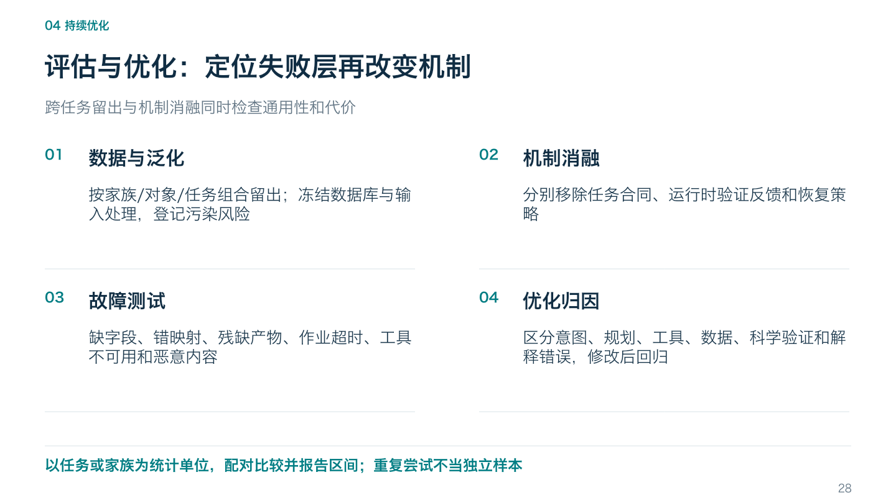
| 数据与泛化 | 按家族/对象/任务组合留出；冻结数据库与输入处理，登记污染风险 |
| 机制消融 | 分别移除任务合同、运行时验证反馈和恢复策略 |
| 故障测试 | 缺字段、错映射、残缺产物、作业超时、工具不可用和恶意内容 |
| 优化归因 | 区分意图、规划、工具、数据、科学验证和解释错误，修改后回归 |
以任务或家族为统计单位，配对比较并报告区间；重复尝试不当独立样本
模型不能绕过工具网关、数据策略与资源边界
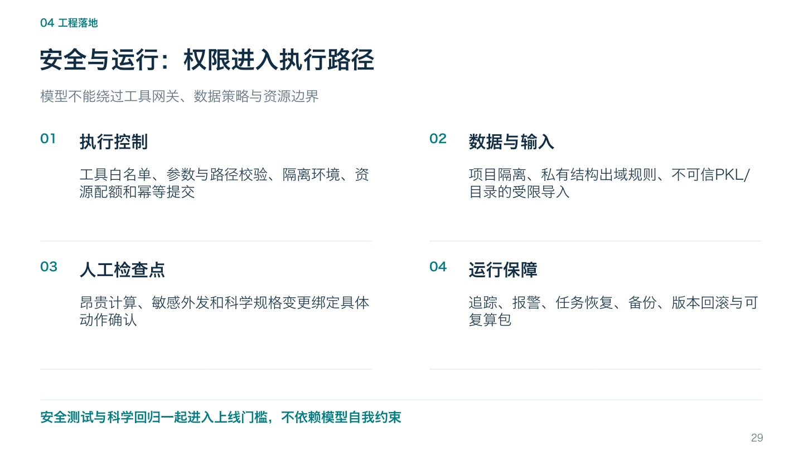
| 执行控制 | 工具白名单、参数与路径校验、隔离环境、资源配额和幂等提交 |
| 数据与输入 | 项目隔离、私有结构出域规则、不可信PKL/目录的受限导入 |
| 人工检查点 | 昂贵计算、敏感外发和科学规格变更绑定具体动作确认 |
| 运行保障 | 追踪、报警、任务恢复、备份、版本回滚与可复算包 |
安全测试与科学回归一起进入上线门槛，不依赖模型自我约束
按可检查的系统能力推进，同时逐项扩大结构生物学覆盖
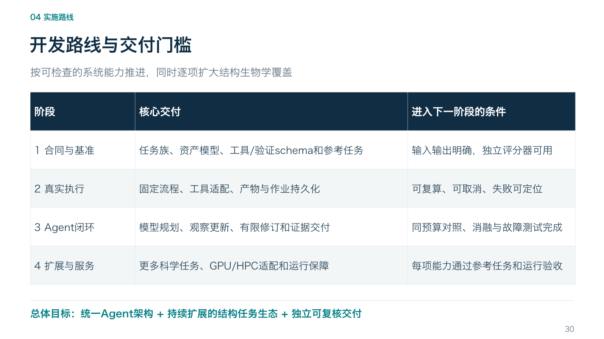
| 阶段 | 核心交付 | 进入下一阶段的条件 |
| 1 合同与基准 | 任务族、资产模型、工具/验证schema和参考任务 | 输入输出明确，独立评分器可用 |
| 2 真实执行 | 固定流程、工具适配、产物与作业持久化 | 可复算、可取消、失败可定位 |
| 3 Agent闭环 | 模型规划、观察更新、有限修订和证据交付 | 同预算对照、消融与故障测试完成 |
| 4 扩展与服务 | 更多科学任务、GPU/HPC适配和运行保障 | 每项能力通过参考任务和运行验收 |
总体目标：统一Agent架构 + 持续扩展的结构任务生态 + 独立可复核交付
这是30页Agent方案的实施路线，沿用现有PRD0.2作为已定义开发基线，新的领域任务通过扩展合同和适配器逐项接入，不另造平行PRD版本。本轮更新的是设计汇报和功能覆盖目标，并未部署新的Agent运行服务。